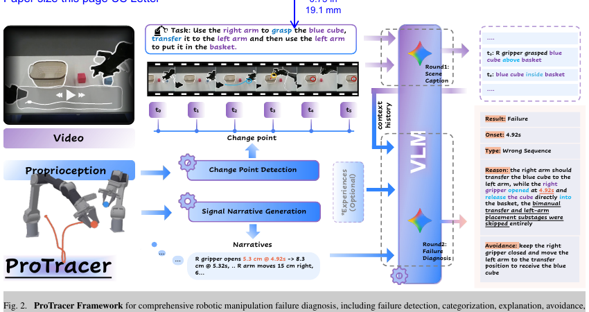
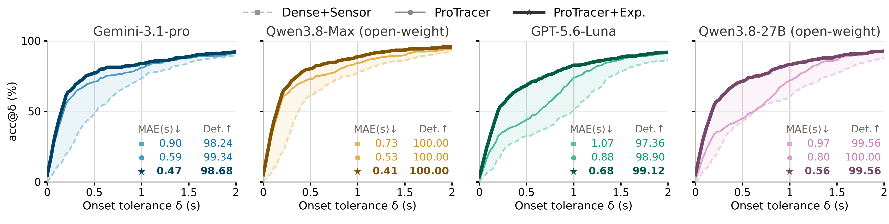
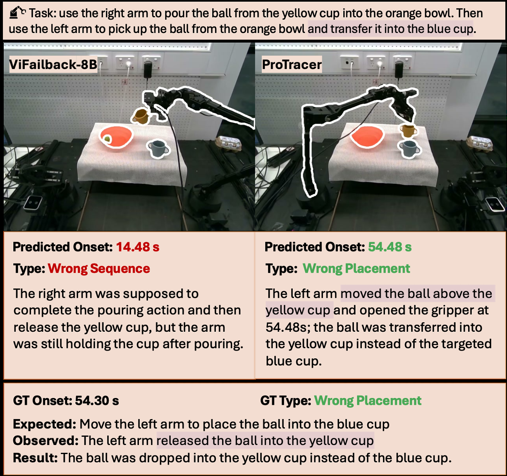

Locate transitions
Gripper and end-effector dynamics drive change-point detection and select informative visual moments.
ROBOT FAILURE ANALYSIS
Under review
01 / Motivation
Robot manipulation failures may begin well before their consequences become visible. ProTracer introduces failure onset localization: retrospectively identifying the earliest moment at which an execution deviates from a valid task-completion trajectory and is ultimately followed by failure.
The framework combines temporally precise proprioceptive signals with the multimodal reasoning capabilities of existing vision-language models. It requires no additional model training and supports failure detection, categorization, explanation, avoidance, and onset localization.
02 / Method

Gripper and end-effector dynamics drive change-point detection and select informative visual moments.
Dense robot-state signals become structured, grounded natural-language descriptions for VLM reasoning.
A VLM reasons over visual evidence, signal narratives, task context, and optional reflective experience.
03 / Results


Why it matters
On long-horizon executions, an earlier action can look suspicious without being the true onset. ProTracer uses the robot's physical state to align semantic diagnosis with the moment the execution actually goes off track.
Removing sensor input more than doubles onset MAE from 0.59 s to 1.18 s, while removing vision collapses failure-type accuracy. The modalities play complementary roles.
04 / Citation
Citation details will be added with the public paper release.
@article{protracer2026,
title = {ProTracer: Proprioception-Guided Failure Diagnosis in Robot Manipulation},
author = {Anonymous Authors},
year = {2026}
}